4 Some Self-Contained Examples
4.1 What is in this chapter?
We introduce Bayesian data analysis and Stan through a set of examples that are small but have aspects of real problems. Here are the examples we use in this chapter:
Golf putting. A simple nonlinear regression model demonstrating the flexibility of Stan to fit arbitrarily specified models, and demonstrating the advantages of thoughtful modeling applied to real data.
Movie ratings. A fake-data example of an item-response problem. We build up the model in different ways and demonstrate how to use fake-data simulation.
World Cup. A simple item-response model fit to real data with an external predictor, thus two data sources to be combined. One feature of this example is that the first model we fit had a bug which took us some work to find out.
Sex ratio. A Bayesian analysis of a notorious example from the biology literature in which headlines were obtained from what was essentially pure noise. This is a good example of the importance of prior information when data are weak, and because the problem is so simple, with only one parameter of interest, we can show graphically how the posterior distribution is a compromise between the prior distribution and the likelihood.
Time series competition. A simple example in which we push through all the steps from data processing, through Bayesian modeling and inference, to decision analysis. This example also demonstrates how to fit a mixture model in Stan.
Declining exponential. A nonlinear model that comes up in many science and engineering applications, also illsutrating the use of bounds in parameter estimation.
Sum of declining exponentials. An important class of nonlinear models that can be surprisingly difficult to estimate from data. This example illustrates how Stan can fail, and also the way in which default prior information can add stability to an otherwise intractable problem.
We perform all these computations in R and Stan—processing data in R, fitting models in Stan, and using R for postprocessing of inferences and graphics—but we suppress the R code, as our focus is on the Stan programming. You can go to the raw knitr document (the .Rmd file) in order to see the R code and reproduce all these analyses.
4.2 Golf putting
The following graph shows data on the proportion of successful golf putts as a function of distance from the hole. Unsurprisingly, the probability of making the shot declines as a function of distance:

The error bars associated with each point \(j\) in the above graph are simple binomial standard deviations, \(\sqrt{\hat{p}_j(1-\hat{p}_j)/n_j}\), where \(\hat{p_j}=y_j/n_j\) is the success rate for putts taken at distance \(x_j\).
Logistic regression
Can we model the probability of success in golf putting as a function of distance from the hole? Given usual statistical practice, the natural starting point would be logistic regression:
\[ y_j\sim\mbox{binomial}(n_j, \mbox{logit}^{-1}(a + bx_j)), \mbox{ for } j=1,\dots, J. \]
In Stan, this is:
data {
int J;
int n[J];
vector[J] x;
int y[J];
}
parameters {
real a;
real b;
}
model {
y ~ binomial_logit(n, a + b*x);
}Here is the result of fitting this model to the data:
Inference for Stan model: golf_logistic.
4 chains, each with iter=2000; warmup=1000; thin=1;
post-warmup draws per chain=1000, total post-warmup draws=4000.
mean se_mean sd 2.5% 25% 50% 75% 98%
a 2.23 0.00 0.06 2.12 2.19 2.23 2.27 2.35
b -0.26 0.00 0.01 -0.27 -0.26 -0.26 -0.25 -0.24
lp__ -3021.18 0.03 1.03 -3023.96 -3021.57 -3020.87 -3020.45 -3020.18
n_eff Rhat
a 1126 1
b 1112 1
lp__ 1322 1
Samples were drawn using NUTS(diag_e) at Sun Dec 16 22:08:28 2018.
For each parameter, n_eff is a crude measure of effective sample size,
and Rhat is the potential scale reduction factor on split chains (at
convergence, Rhat=1).Stan has computed the posterior means \(\pm\) standard deviations of \(a\) and \(b\) to be \(2.23\pm 0.06\) and \(-0.26\pm 0.01\), respectively. The Monte Carlo standard error of the mean of each of these parameters is 0 (to two decimal places), indicating that the simulations have run long enough to estimate the posterior means precisely. The posterior quantiles give a sense of the uncertainty in the parameters, with 50% posterior intervals of \([2.19,2.27]\) and \([-0.26,-0.25]\) for \(a\) and \(b\), respectively. Finally, the values of \(\widehat{R}\) near 1 tell us that the simulations from Stan’s four simulated chains have mixed well.
The following graph shows the fit plotted along with the data:

The thick line shows the fit corresponding to the posterior median estimates of the parameters \(a\) and \(b\); the light lines show 20 draws from the posterior distribution.
Modeling from first principles
As an alternative to logistic regression, we shall build a model from first principles and fit it to the data. The graph below shows a simplified sketch of a golf shot. The dotted line represents the angle within which the ball of radius \(r\) must be hit so that it falls within the hole of radius \(R\). This threshold angle is \(\sin^{-1}((R-r)/x)\).

Golf diagram
The next step is to model human error. We assume that the golfer is attempting to hit the ball completely straight but that many small factors interfere with this goal, so that the actual angle follows a normal distribution centered at 0 with some standard deviation \(\sigma\).
The probability the ball goes in the hole is then the probability that the angle is less than the threshold; that is, \(2\Phi(\sin^{-1}((R-r)/x)) - 1\), where \(\Phi\) is the cumulative normal distribution function.
Our model then has two parts: \[y_j \sim \mbox{binomial}(n_j, p_j)\] \[p_j = 2\Phi(\sin^{-1}((R-r)/x)) - 1 , \mbox{ for } j=1,\dots, J.\]
Here is the model in Stan:
data {
int J;
int n[J];
vector[J] x;
int y[J];
real r;
real R;
}
parameters {
real<lower=0> sigma;
}
model {
vector[J] p;
for (j in 1:J){
p[j] = 2*Phi(asin((R-r)/x[j]) / sigma) - 1;
}
y ~ binomial(n, p);
}
generated quantities {
real sigma_degrees;
sigma_degrees = (180/pi())*sigma;
}The data \(J,n,x,y\) have already been set up; we just need to define \(r\) and \(R\) (the golf ball and hole have diameters 1.68 and 4.25 inches, respectively), and run the Stan model:
Here is the result:
Inference for Stan model: golf1.
4 chains, each with iter=2000; warmup=1000; thin=1;
post-warmup draws per chain=1000, total post-warmup draws=4000.
mean se_mean sd 2.5% 25% 50% 75%
sigma 0.03 0.00 0.00 0.03 0.03 0.03 0.03
sigma_degrees 1.53 0.00 0.02 1.48 1.51 1.53 1.54
lp__ -2926.77 0.02 0.72 -2928.87 -2926.93 -2926.48 -2926.31
98% n_eff Rhat
sigma 0.03 1320 1
sigma_degrees 1.57 1320 1
lp__ -2926.26 1600 1
Samples were drawn using NUTS(diag_e) at Sun Dec 16 22:09:05 2018.
For each parameter, n_eff is a crude measure of effective sample size,
and Rhat is the potential scale reduction factor on split chains (at
convergence, Rhat=1).The model has a single parameter, \(\sigma\). From the output, we find that Stan has computed the posterior mean of \(\sigma\) to be 0.0267 (multiplying this by \(180/\pi\), this comes to 1.5 degrees). The Monte Carlo standard error of the mean is 0 (to four decimal places), indicating that the simulations have run long enough to estimate the posterior mean precisely. The posterior standard deviation is calculated at 0.0004 (that is, 0.02 degrees), indicating that \(\sigma\) itself has been estimated with high precision, which makes sense given the large number of data points and the simplicity of the model. The precise posterior distribution of \(\sigma\) can also be seen from the narrow range of the posterior quantiles. Finally, \(\widehat{R}\) is near 1, telling us that the simulations from Stan’s four simulated chains have mixed well.
We next plot the data and the fitted model (here using the posterior median of \(\sigma\) but in this case the uncertainty is so narrow that any reasonable posterior summary would give essentially the same result), along with the logistic regression fitted earlier:
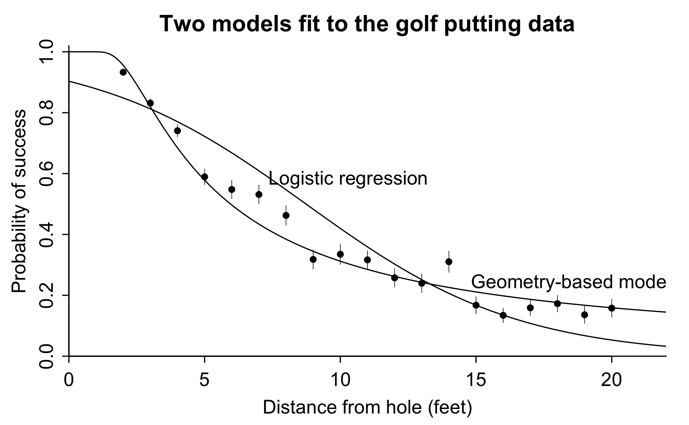
The custom nonlinear model fits the data much better. This is not to say that the model is perfect—any experience of golf will reveal that the angle is not the only factor determining whether the ball goes in the hole—but it seems like a useful start, and it is good to know that we can fit nonlinear models by just coding them up in Stan.
4.3 Movie ratings
Consider the following scenario. You are considering which of two movies to go see. Both have average online ratings of 4 out of 5 stars, but one is based on 2 ratings and the other is based on 100. Which movie should you go see?
We will set this up as a statistics problem, making the assumption that you would prefer to see the movie that is most preferred, on average, by others. That is, we can imagine every movie having a “true popularity” which would be the average rating, if everyone in the population were to see this movie and rate it on a 0–5 scale. We are thus implicitly assuming that these two movies are aimed at the same target audience, which includes you.
We further assume that each of these movies has been rated by a random sample of people from this general audience: thus, we can consider the observed average rating of 4.0 in each case to be an estimate of the true popularity of each movie. At the end of this example, we will discuss how to relax these assumptions.
At first you might think that since both movies have average ratings of 4.0, it’s a tossup which one to see.
But the estimate based on 2 ratings should be much less accurate than the estimate based on 100 ratings. If you really want to see a 4-star movie, the one with 100 ratings should be a safer bet.
We’ll now make this point using Bayesian inference, going through the following steps:
Constructing data fitting the above story and fitting a Bayesian model to get inferences about the true popularity of the two movies.
Embedding this all in a larger problem with many movies being rated.
Setting up a model in which different people rate different movies, with systematic differences between who rates which movies.
Espanding the model to allow for the possibility that more people see, and rate, movies that are more popular.
For each step, we set up a model, simulate fake data from that model, and check that we can recover the underlying parameters to some level of accuracy.
Model for 2 movies
Define \(\theta_j, j=1,2\) to be the true popularities of the two movies, with any randomly selected rating for movie \(j\) being drawn from a normal distribution with mean \(\theta_j\) and standard deviation \(\sigma\).
For simplicity, we’re pretending radings are continuous unbounded numbers (rather than integers from 0 through 5) and that the distributions of ratings for the teo movies differ only in their mean, not their variance. We’re not allowing, for example, a polarizing movie that you either love or hate. The ratings distribution for any movie is assumed to be bell-shaped. Again, we can later go back and expand our models to allow other possibilities.
In our initial example, we have 102 ratings: 2 for one movie and 100 for the other. We label the individual ratings as \(y_i,i=1,\dots,N=102\) and index the movies being rated as \(j[i]\), where \(j[1]=j[2]=1\) and \(j[3]=j[4]=\dots=j[102]=2\). We can then write our model as, \[y_i \sim \mbox{normal}(\theta_{j[i]}, \sigma), i=1,\dots,N.\] In statistics notation such as used in Bayesian Data Analysis, the normal distribution is written in terms of mean and variance, or squared standard deviation: \(y \sim \mbox{normal}(\mu,\sigma^2)\). But in this book we will follow Stan notation and write \(y \sim \mbox{normal}(\mu,\sigma)\).
To perform Bayesian inference we also need a prior distribution on all the parameters, which in this case are \(\theta_1\), \(\theta_2\), and \(\sigma\).
First, the parameters have some mathematical constraints. The available ratings are 0 through 5, so each \(\theta\) must fall in that range as well, and \(\sigma\) cannot be more than 2.5, and that is the maximum standard deviation among all distributions defined in the range \([0,5]\) (with that maximum attained with the distribution with all its mass at the extremes, with half the responses at 0 and half at 5).
Beyond this, we will assume that movies typically get ratings of around three stars. We’ll give normal prior distributions with mean 3 and standard deviation 1 to each of the parameters \(\theta_1\) and \(\theta_2\), which represent the underlying or population-average ratings of the two movies.
Here is the resulting Stan model:
data {
int N;
vector[N] y;
int<lower=1, upper=2> movie[N];
}
parameters {
vector<lower=0, upper=5>[2] theta;
real<lower=0, upper=2.5> sigma_y;
}
model {
theta ~ normal(3, 1);
y ~ normal(theta[movie], sigma_y);
/* equivalently:
for (j in 1:2){
theta[j] ~ normal(3, 1);
}
for (n in 1:N){
y[n] ~ normal(theta[movie[n]], sigma_y);
}
*/
}Near the bottom of the above program, the lines blocked off with a slash and star are comments, indicating how the vectorization in the Stan language allows us to assign an entire set of probability distributions at once.
We next construct data for our two movies. For movie 1, we suppose the two ratings are 3 and 5, which give the posited average rating of 4. For movie 2, we suppose the ratings are 10 2’s, 20 3’s, 30 4’s, and 40 5’s, which again average to 4. This set of hypothetical ratings does not follow the assumed normal distribution, but that’s fine; we can still fit the model.
Here is the result:
Inference for Stan model: ratings_1.
4 chains, each with iter=2000; warmup=1000; thin=1;
post-warmup draws per chain=1000, total post-warmup draws=4000.
mean se_mean sd 2.5% 25% 50% 75% 98% n_eff Rhat
theta[1] 3.6 0.01 0.56 2.50 3.25 3.6 4.0 4.7 2787 1
theta[2] 4.0 0.00 0.11 3.78 3.92 4.0 4.1 4.2 3309 1
sigma_y 1.0 0.00 0.07 0.89 0.97 1.0 1.1 1.2 3042 1
lp__ -54.2 0.04 1.40 -57.94 -54.89 -53.9 -53.2 -52.7 1456 1
Samples were drawn using NUTS(diag_e) at Sun Dec 16 22:09:42 2018.
For each parameter, n_eff is a crude measure of effective sample size,
and Rhat is the potential scale reduction factor on split chains (at
convergence, Rhat=1).The estimated population average popularity is 3.6 for the first movie and 4.0 for the second. We hae more information on the second movie, so we can more precisely estimate it as truly meriting 4 stars in the public assessment: the 50% posterior interval for \(\theta_2\) is \([3.9, 4.1]\). In contrast, we have a lot more uncertainty about \(\theta_1\), which according to our model has a 50% probability of being in the range \([3.2, 4.0]\) but could be as low as 2.5 or as high as 4.7.
So, which movie to see? It depends on your goals. Movie 2 is a safer bet, with a higher estimated quality. But Movie 1 has a small chance of being outstanding, along with a moderate chance of being mediocre. You can see Movie 1 if you want to roll the dice.
Estending the model to J movies
It is easy to expand the Stan program to allow an arbitrary number of movies:
data {
int N;
vector[N] y;
int J;
int<lower=1, upper=J> movie[N];
}
parameters {
vector<lower=0, upper=5>[J] theta;
real<lower=0, upper=2.5> sigma_y;
}
model {
theta ~ normal(3, 1);
y ~ normal(theta[movie], sigma_y);
}As usual, to really understand this model, it helps to be able to simulate fake data. Let’s set \(J=40\) movies and let the number of times each movie is rated be a random number, uniformly distributed between 0 and 100. We start by drawing parameters \(\theta_j\) from a normal distribution with mean 3 and standard deviation 0.5 (so that the movies’ true popularities are mostly between 2 and 4 on that 0–5 scale), and then sample continuous individual ratings \(z_i\) for each movie \(j[i]\) from a normal distribution with mean \(\theta_{j[i]}\) and standard deviation 2: \[ \theta_j \sim \mbox{normal}(3.0, 0.5), \mbox{ for } j=1,\dots,J \\ z_i \sim \mbox{normal}(\theta_{j[i]}, 2.0), \mbox{ for } i=1,\dots,n. \] To keep things simple, we will ignore the fact that the ratings are constrained to be between 0 and 5; instead, we will simulate continuous ratings on an unbounded scale. It is not difficult in Stan to model ordered discrete responses; see Chapter **. Here, though, we will ignore that feature of the data.
We simulate the fake data in R and then fit the new model in Stan.
Here is the result:
Inference for Stan model: ratings_2.
4 chains, each with iter=2000; warmup=1000; thin=1;
post-warmup draws per chain=1000, total post-warmup draws=4000.
mean se_mean sd 2.5% 25% 50% 75% 98%
theta[1] 3.3 0.00 0.23 2.80 3.1 3.3 3.4 3.7
theta[2] 3.2 0.00 0.23 2.75 3.0 3.2 3.4 3.7
theta[3] 3.6 0.01 0.43 2.79 3.3 3.6 3.9 4.5
theta[4] 2.3 0.01 0.43 1.45 2.0 2.3 2.6 3.2
theta[5] 2.5 0.00 0.21 2.06 2.4 2.5 2.6 2.9
theta[6] 3.0 0.00 0.22 2.60 2.9 3.0 3.2 3.5
theta[7] 3.0 0.01 0.77 1.44 2.5 3.0 3.5 4.5
theta[8] 2.4 0.00 0.22 1.94 2.2 2.4 2.5 2.8
theta[9] 2.1 0.00 0.21 1.68 1.9 2.1 2.2 2.5
theta[10] 3.4 0.00 0.25 2.91 3.2 3.4 3.6 3.9
theta[11] 3.9 0.00 0.27 3.31 3.7 3.9 4.0 4.4
theta[12] 2.7 0.00 0.30 2.10 2.5 2.7 2.9 3.3
theta[13] 2.7 0.00 0.24 2.20 2.5 2.7 2.8 3.1
theta[14] 2.4 0.00 0.24 1.92 2.2 2.4 2.5 2.9
theta[15] 2.9 0.01 0.37 2.21 2.7 2.9 3.2 3.7
theta[16] 2.4 0.00 0.21 1.93 2.2 2.4 2.5 2.8
theta[17] 2.9 0.01 0.44 1.98 2.5 2.8 3.1 3.7
theta[18] 3.3 0.00 0.25 2.81 3.1 3.3 3.5 3.8
theta[19] 2.5 0.00 0.22 2.04 2.3 2.5 2.6 2.9
theta[20] 2.3 0.00 0.34 1.62 2.1 2.3 2.5 3.0
theta[21] 3.6 0.00 0.23 3.13 3.4 3.6 3.7 4.0
theta[22] 2.3 0.00 0.33 1.66 2.1 2.3 2.5 3.0
theta[23] 2.6 0.01 0.36 1.89 2.4 2.6 2.9 3.3
theta[24] 3.3 0.00 0.20 2.90 3.2 3.3 3.4 3.7
theta[25] 3.0 0.00 0.24 2.52 2.9 3.0 3.2 3.5
theta[26] 3.4 0.00 0.21 2.99 3.3 3.4 3.5 3.8
theta[27] 2.8 0.01 0.44 1.92 2.5 2.8 3.1 3.6
theta[28] 3.0 0.00 0.20 2.59 2.9 3.0 3.1 3.4
theta[29] 2.2 0.00 0.23 1.71 2.0 2.2 2.3 2.6
theta[30] 2.8 0.01 0.49 1.85 2.5 2.8 3.1 3.8
theta[31] 2.5 0.00 0.20 2.07 2.3 2.5 2.6 2.8
theta[32] 3.4 0.00 0.19 2.96 3.2 3.4 3.5 3.7
theta[33] 2.2 0.00 0.28 1.69 2.0 2.2 2.4 2.8
theta[34] 3.6 0.00 0.32 2.93 3.4 3.6 3.8 4.2
theta[35] 3.5 0.01 0.42 2.66 3.2 3.5 3.8 4.3
theta[36] 3.4 0.01 0.40 2.56 3.1 3.4 3.6 4.1
theta[37] 3.2 0.00 0.30 2.60 3.0 3.2 3.4 3.8
theta[38] 2.7 0.01 0.88 0.96 2.1 2.8 3.4 4.4
theta[39] 2.9 0.00 0.32 2.21 2.6 2.9 3.1 3.5
theta[40] 3.0 0.00 0.24 2.59 2.9 3.0 3.2 3.5
sigma_y 2.0 0.00 0.03 1.95 2.0 2.0 2.0 2.1
lp__ -2544.5 0.12 4.87 -2554.77 -2547.6 -2544.2 -2541.1 -2535.9
n_eff Rhat
theta[1] 5086 1
theta[2] 5115 1
theta[3] 5290 1
theta[4] 5307 1
theta[5] 6113 1
theta[6] 5823 1
theta[7] 5449 1
theta[8] 5332 1
theta[9] 4728 1
theta[10] 5411 1
theta[11] 4770 1
theta[12] 5733 1
theta[13] 5218 1
theta[14] 6083 1
theta[15] 5329 1
theta[16] 5109 1
theta[17] 5117 1
theta[18] 5730 1
theta[19] 5811 1
theta[20] 6658 1
theta[21] 5521 1
theta[22] 5267 1
theta[23] 4690 1
theta[24] 5042 1
theta[25] 5328 1
theta[26] 6411 1
theta[27] 5580 1
theta[28] 4640 1
theta[29] 4833 1
theta[30] 4542 1
theta[31] 4821 1
theta[32] 5379 1
theta[33] 5271 1
theta[34] 5392 1
theta[35] 5237 1
theta[36] 5252 1
theta[37] 5148 1
theta[38] 5164 1
theta[39] 5053 1
theta[40] 4689 1
sigma_y 5860 1
lp__ 1657 1
Samples were drawn using NUTS(diag_e) at Sun Dec 16 22:10:21 2018.
For each parameter, n_eff is a crude measure of effective sample size,
and Rhat is the potential scale reduction factor on split chains (at
convergence, Rhat=1).We can check the fit by plotting the posterior inferences against the true parameter values:
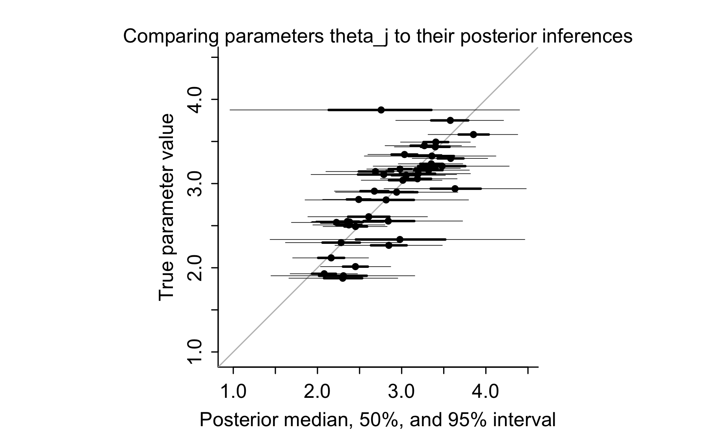
Roughly half the 50% intervals and 95% of the 95% intervals contain the true parameter value, which is about what we would expect to see, given that we have simulated data from the model we are fitting.
The intervals in the above graph vary in width. The more data we have for any given movie, the more precise is our estimate of its underlying popularity. Here is a graph showing the width of the 50% interval as a function of sample size:

The only reason the points do not completely fall along a smooth curve here is that the intervals are computed using simulation. Here we have 4000 simulation draws. If we were to run Stan longer and obtain more iterations, then the resulting intervals would be more stable, and the above graph would look smoother. For all practical purposes, though, we have enough simulations and enough iterations. For example, if \(\theta_1\) has a posterior 50% interval of \([3.1, 3.5]\), there is no real reason to get a huge number of simulations and to find out that the precise interval is \([3.13, 3.48]\), as this makes no real difference in our understanding of \(\theta_3\), nor should it seriously affect any decision we might want to make using these data.
Item-response model with parameters for raters and for movies
There are many ways to extend the above model. To start with, we can recognize that different people rate different movies, and each rater uses his or own scale. Suppose, for example, that some people tend to give high ratings and others tend to give low ratings, and the sorts of people who give high ratings are more likely to watch romantic comedies, while the tougher judges more frequently watch crime movies. Then a simple comparison of average ratings will be unfair to the crime movies, as this does not take into account systematic differences between raters.
We can model rater effects using what is called an item-response model, the simplest form of which looks like this, for a numerical rating \(y_i\) of movie \(j[i]\) by rater \(k[i]\),
\[ y_i \sim \mbox{normal}(a_{j[i]} - b_{k[i]}, \sigma_y), \] Here, \(a_j\) is a parameter that could be said to represent movie “quality,” corresponding to the average rating that movie \(j\) would receive, if it were reviewed by average raters. The parameter \(b_k\) represents the “difficulty” of rater \(k\): higher values of \(b_k\) correspond to raters who give tougher judgments of equivalent movies.
The previous model is equivalent to this new model with all the \(b_k\)’s fixed at zero. When fitting the new model, we constrain the \(b_k\)’s to come from a distribution whose average is zero. Some such constraint is necessary because otherwise the model would not be identified: for example, you could add 100 to each of the \(a_j\)’s and \(-100\) to each of the \(b_k\)’s and not change any of the predictors at all.
Our full model looks like this:
\[ y_i \sim \mbox{normal}(a_{j[i]} - b_{k[i]}, \sigma_y), \mbox{ for } i=1,\dots, N \\ a_j \sim \mbox{normal}(\mu_a, \sigma_a), \mbox{ for } j=1,\dots, J \\ b_k \sim \mbox{normal}(0, \sigma_b), \mbox{ for } k=1,\dots, K. \]
We also need prior distributions for the as-yet-unmodeled parameters \(\mu_a, \sigma_a, \sigma_b, \sigma_y\).
But before setting that up, we re-express the model in a way that will be generally useful:
\[ y_i \sim \mbox{normal}(\mu + \sigma_a*\alpha_{j[i]} - \sigma_b*\beta_{k[i]}, \sigma_y), \mbox{ for } i=1,\dots, N \\ \alpha_j \sim \mbox{normal}(0, 1), \mbox{ for } j=1,\dots, J \\ \beta_k \sim \mbox{normal}(0, 1), \mbox{ for } k=1,\dots, K. \] This new version, sometimes called the non-centered parameterization, is convenient because it separates the scaled and unscaled parameters; also it can have certain computational advantages, as discussed here: [point to Mike Betancourt’s case study?]. The new models are equivalent, with the movle quality parameters being expressed as, \(a_j = \mu + \sigma_{\alpha}*\alpha_j\).
And now we can add prior distributions. We will start with uniform priors (subject to the constraint that \(\sigma_a\), \(\sigma_b\), and \(\sigma_y\) must all be positive), adding in prior information later if the data are weak enough that this seems necessary.
Here is the Stan program:
data {
int N;
vector[N] y;
int J;
int K;
int<lower=1, upper=J> movie[N];
int<lower=1, upper=K> rater[N];
}
parameters {
vector[J] alpha;
vector[K] beta;
real mu;
real<lower=0> sigma_a;
real<lower=0> sigma_b;
real<lower=0> sigma_y;
}
transformed parameters {
vector[J] a;
a = mu + sigma_a * alpha;
}
model {
y ~ normal(mu + sigma_a * alpha[movie] + sigma_b * beta[rater], sigma_y);
alpha ~ normal(0, 1);
beta ~ normal(0, 1);
}As usual, we’ll check it by simulating fake data, then fitting the model in Stan and checking that the parameters are recovered.
We’ll start by simulating data from \(J=40\) movkes and \(K=100\) raters, with each person rating each movie, and with parameters \(\mu=3\) (thus, an average rating of 3 for all movies and all raters), \(\sigma_a=0.5\), \(\sigma_b=0.5\) (thus, the same amount of variation in raters’ difficulties than in the quality of movies) and \(\sigma_y=2\), as before.
Here is part of the Stan fit. We just display the hyperparameters, to save space omitting the parameter vectors \(\alpha\) and \(\beta\) and the transformed parameter vector \(a\).
Inference for Stan model: ratings_3.
4 chains, each with iter=2000; warmup=1000; thin=1;
post-warmup draws per chain=1000, total post-warmup draws=4000.
mean se_mean sd 2.5% 25% 50% 75% 98% n_eff Rhat
mu 2.89 0 0.10 2.69 2.82 2.88 2.95 3.08 868 1
sigma_a 0.52 0 0.07 0.40 0.47 0.52 0.57 0.68 1180 1
sigma_b 0.36 0 0.05 0.27 0.32 0.36 0.39 0.45 1996 1
sigma_y 2.02 0 0.02 1.97 2.01 2.02 2.04 2.07 7515 1
Samples were drawn using NUTS(diag_e) at Sun Dec 16 22:12:04 2018.
For each parameter, n_eff is a crude measure of effective sample size,
and Rhat is the potential scale reduction factor on split chains (at
convergence, Rhat=1).Stan did fine recovering the variance parameters. The mean level \(\mu\) is more difficult to nail down, but the true value of 3.0 is within the range of posterior uncertainty.
Let’s check the coverage for the \(\alpha\)’s and \(\beta\)’s:
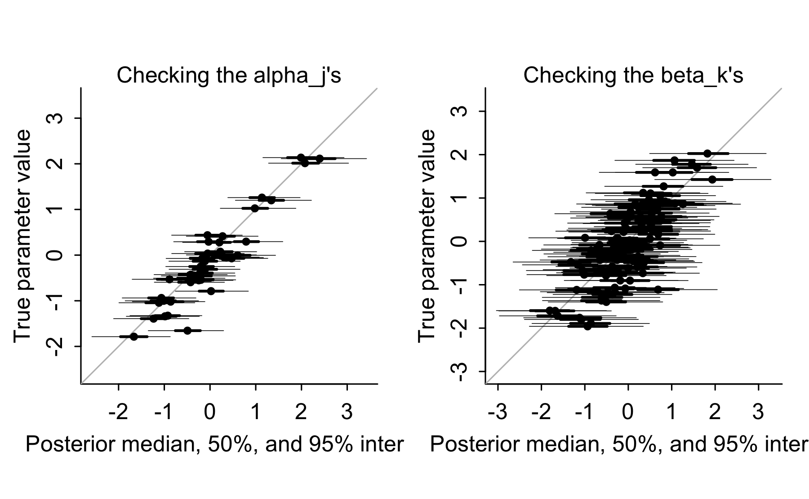
Now let’s put our model to more of a challenge by giving it unbalanced data. Let’s divide the movies into two groups: romantic comedies (movies \(j=1,\dots,20\)) and crime stories (movies \(j=21,\dots,40\)), and set things up so that the more difficult reviewers (those with positive values of \(\alpha_k\)) are more likely to review crime stories.
We’ll set up the simulation as follows. Each of the \(K\) people might rate each of the \(J\) movies. If \(\beta_k>0\), then person \(k\) will have a 30% chance of rating each romantic comedy and a 60% chance of rating each crime movie. If \(\beta_k<0\), then the probabilities are reversed, and person \(k\) has a 30% chance of rating each romantic comedy and a 60% chance of rating each crime movie. So, in the data, we’ll expect to see tougher reviews on the crime stories.
We simulate this model, using the same ratings as before but just selecting a subset according to the above-defined probabilities.
We then fit the model in Stan.
Inference for Stan model: ratings_3.
4 chains, each with iter=2000; warmup=1000; thin=1;
post-warmup draws per chain=1000, total post-warmup draws=4000.
mean se_mean sd 2.5% 25% 50% 75% 98% n_eff Rhat
mu 2.89 0 0.10 2.70 2.82 2.89 2.96 3.08 815 1
sigma_a 0.52 0 0.07 0.40 0.47 0.52 0.57 0.68 1246 1
sigma_b 0.36 0 0.05 0.27 0.33 0.36 0.39 0.46 1937 1
sigma_y 2.02 0 0.02 1.98 2.00 2.02 2.04 2.07 6937 1
Samples were drawn using NUTS(diag_e) at Sun Dec 16 22:57:15 2018.
For each parameter, n_eff is a crude measure of effective sample size,
and Rhat is the potential scale reduction factor on split chains (at
convergence, Rhat=1).And display as before. In the left graph we use open circles for the romantic comedies (those with \(j=1,\dots,10\)) and solid circles for the crime movies (\(j=11,\dots,20\)). In the right graph we use open circles for the nice reviewers (those with \(\beta_k<0\)) and solid circles for the difficult reviewers (\(\beta_k<0\)). Coverage still seems fine, which it should be—again, we ran our simulations under the model that we later fit—but it is still gratifying to see, as a confirmation that we are not making any obvious mistakes.
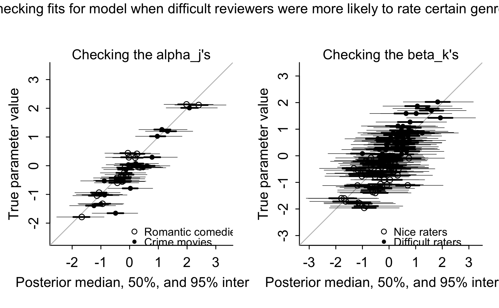
We next do some analysis to show how naive averaging of ratings will give misleading estimates of movie quality, and the model-based estimates correct for this bias. We first compute the average observed rating, \(\bar{y}_j\) for each movie \(j\).
Recall that in our model this maps to the transformed parameter \(a_j=\mu + \sigma_a*\alpha_j\), the expected average rating that we would see if everyone in the population rated every movie. We compute the posterior median of \(a_j\) and also recall its true value from the process used to simulate the data.
We then plot true movie quality (the parameter , first versus raw average rating, then versus the model-based estimate:

The raw averages for the romantic comedies are mostly too high: The open circles on the first plot are mostly to the right of the diagonal line, implying that those averages \(\bar{y}_j\) are higher than the true values of the movie quality parameters \(a_j\). Meanwhile the raw averages for the crime movies are mostly too low, with the solid dots on the first plot mostly to the left of the diagonal line. This all makes sense, as we have constructed our simulation so that the romantic comedies are more likely to be rated by nicer reviewers, and the crime movies are more likely to rated by tougher reviewers.
The model adjusts for these biases, though, and so the model-based estimates, shown in the second plot above, do not have these systematic problems.
Other potential extentions to the model
Here are some of the many ways in which the model could be generalized in order to make it more realistic:
More popular movies should get more ratings. So we might want to extend the model to allow the probability of a person rating a movie to depend on the movie’s popularity, which here is coded by the parameter \(\alpha_j\).
Different people have different preferences for different genres. The model could capture this by allowing each person to have a vector of difficulty parameters, one for each genre.
Movie ratings are discrete; we could replace the normal distribution for \(y_i\) by an ordered logistic model which would give probabilities of each of the discrete responses from 0 through 5.
4.4 World Cup
We fit a model to estimate the abilities of the teams in the 2014 soccer World Cup. We fit a simple linear item response model, using the score differentials as data (ignoring the shoot-outs). We also have a feeling that when the game is not close the extra goals don’t provide as much information so we’ll fit the model on the square-root scale.
The model is as follows: if game \(i\) has teams \(j_1\) and team \(j_2\) playing, and they score \(z_1\) and \(z_2\) goals, respectively, then the data point for this game is \(y_i = \mbox{sign}(z_1-z_2)*\sqrt{|z_1-z_2|}\), and the data model is: \(y_i \sim \mbox{normal}(a_{j_1[i]}-a_{j_2[i]}, \sigma_y)\), where \(a_{j_1}\) and \(a_{j_2}\) are the ability parameters (to use psychometrics jargon) for the two teams and \(\sigma_y\) is a scale parameter estimated from the data. But then before fitting the model we was thinking of occasional outliers such as that Germany-Brazil match so we decided that a \(t\) model could make more sense: \[ y_i \sim \mbox{t}(\nu, a_{j_1[i]}-a_{j_2[i]}, \sigma_y), \] setting the degrees of freedom to \(\nu=7\) which has been occasionally recommended as a robust alternative to the normal.
It turned out, when the model was all fit and we started tinkering with it, that neither the square root transformation nor the long-tailed \(t\) distribution were really necessary to model the soccer scores; a simple normal model would have been fine. But we’ll work with this particular model because that was how we first thought of setting it up.
There weren’t so many World Cup games (only 64 games in total for 32 teams) so we augmented the dataset by partially pooling the ability parameters toward an external data source, something called the Soccer Power Index that was available on the internet a month before the tournament. We took the rankings, with Brazil at the top (getting a score of 32) and Australia at the bottom (with a score of 1), and then for simplicity in interpretation of the parameters we rescaled these to have mean 0 and standard deviation 1/2, to get “prior scores” that ranged from \(-0.83\) to + \(0.83\).
Our model for the team abilities was then simply, \(a_j \sim \mbox{normal}(\mu + b*\mbox{prior\_score}_j, \sigma_a)\), which we write as \(a_j=\mu+b*\mbox{prior\_score}_j+\sigma_a*\alpha_j\), with \(\alpha_j\sim\mbox{normal}(0,1) \mbox{ for } j=1,\dots,J=32\). Actually, though, all we care about are the relative, not the absolute, team abilities, so we can just set \(\mu=0\), so that the model is, \[a_j = b*\mbox{prior\_score}_j+\sigma_a*\alpha_j, \mbox{ with } \alpha_j \sim \mbox{normal}(0, 1), \mbox{ for } j=1,\dots,J=32.\] At this point we should probably add weakly informative priors for \(b\), \(\sigma_a\), and \(\sigma_y\), but we didn’t bother. We can always go back and add these to stabilize the inferences, but 32 teams should be enough to estimate these parameters so we don’t think it will be necessary in this case.
We now set up the model in Stan:
/* This program has a mistake in it, as will be explained later */
data {
int N_teams;
int N_games;
vector[N_teams] prior_score;
int team_1[N_games];
int team_2[N_games];
vector[N_games] score_1;
vector[N_games] score_2;
real df;
}
transformed data {
vector[N_games] dif;
vector[N_games] sqrt_dif;
dif = score_1 - score_2;
for (i in 1:N_games){
sqrt_dif[i] = (step(dif[i]) - 0.5)*sqrt(fabs(dif[i]));
}
}
parameters {
vector[N_teams] alpha;
real b;
real<lower=0> sigma_a;
real<lower=0> sigma_y;
}
transformed parameters {
vector[N_teams] a;
a = b*prior_score + sigma_a*alpha;
}
model {
alpha ~ normal(0, 1);
sqrt_dif ~ student_t(df, a[team_1] - a[team_2], sigma_y);
}The stuff in the transformed data block is to transform the raw data into signed square root differentials. (The function “fabs” is short for “floating point absolute value.”) It turns out this code has a mistake in it, which we will get to in a bit.
The simulations converge, and the estimates seem reasonable.
Inference for Stan model: worldcup_first_try.
4 chains, each with iter=2000; warmup=1000; thin=1;
post-warmup draws per chain=1000, total post-warmup draws=4000.
mean se_mean sd 2.5% 25% 50% 75% 98% n_eff Rhat
a[1] 0.29 0.00 0.14 -0.01 0.20 0.30 0.39 0.54 3564 1
a[2] 0.37 0.00 0.12 0.13 0.29 0.37 0.44 0.62 4815 1
a[3] 0.48 0.00 0.16 0.21 0.36 0.47 0.59 0.82 1391 1
a[4] 0.17 0.00 0.18 -0.23 0.06 0.20 0.30 0.47 2089 1
a[5] 0.28 0.00 0.14 -0.02 0.19 0.28 0.36 0.57 5984 1
a[6] 0.30 0.00 0.13 0.04 0.22 0.29 0.38 0.58 4036 1
a[7] 0.33 0.00 0.15 0.07 0.23 0.31 0.43 0.66 3158 1
a[8] 0.14 0.00 0.15 -0.20 0.06 0.16 0.24 0.42 4724 1
a[9] 0.04 0.00 0.17 -0.35 -0.06 0.07 0.16 0.31 1942 1
a[10] 0.20 0.00 0.13 -0.05 0.12 0.19 0.28 0.48 4746 1
a[11] 0.33 0.00 0.17 0.07 0.20 0.32 0.44 0.69 1231 1
a[12] 0.05 0.00 0.15 -0.27 -0.04 0.07 0.14 0.32 4750 1
a[13] 0.05 0.00 0.15 -0.27 -0.03 0.06 0.14 0.34 5222 1
a[14] 0.03 0.00 0.14 -0.28 -0.05 0.04 0.11 0.32 5997 1
a[15] -0.03 0.00 0.15 -0.36 -0.11 -0.01 0.06 0.25 5085 1
a[16] -0.07 0.00 0.15 -0.41 -0.16 -0.06 0.02 0.19 3392 1
a[17] -0.05 0.00 0.15 -0.38 -0.14 -0.04 0.04 0.24 5297 1
a[18] 0.00 0.00 0.14 -0.28 -0.08 -0.01 0.08 0.30 4603 1
a[19] -0.03 0.00 0.14 -0.29 -0.11 -0.04 0.05 0.27 5135 1
a[20] 0.01 0.00 0.14 -0.24 -0.08 -0.01 0.10 0.32 3494 1
a[21] -0.14 0.00 0.15 -0.45 -0.22 -0.13 -0.05 0.16 6616 1
a[22] -0.12 0.00 0.14 -0.40 -0.20 -0.12 -0.04 0.17 5756 1
a[23] -0.18 0.00 0.16 -0.52 -0.26 -0.17 -0.09 0.14 5436 1
a[24] -0.16 0.00 0.14 -0.42 -0.24 -0.16 -0.08 0.14 5014 1
a[25] -0.26 0.00 0.16 -0.60 -0.36 -0.25 -0.17 0.03 3858 1
a[26] -0.03 0.00 0.18 -0.31 -0.17 -0.04 0.09 0.35 1280 1
a[27] -0.29 0.00 0.15 -0.62 -0.38 -0.29 -0.20 0.00 5418 1
a[28] -0.41 0.00 0.17 -0.79 -0.51 -0.38 -0.29 -0.13 2330 1
a[29] -0.30 0.00 0.15 -0.60 -0.39 -0.30 -0.21 0.01 5314 1
a[30] -0.42 0.00 0.16 -0.76 -0.51 -0.41 -0.31 -0.13 3689 1
a[31] -0.23 0.00 0.16 -0.50 -0.34 -0.24 -0.13 0.11 2481 1
a[32] -0.39 0.00 0.15 -0.69 -0.48 -0.39 -0.29 -0.09 6363 1
b 0.45 0.00 0.10 0.25 0.39 0.45 0.52 0.65 3344 1
sigma_a 0.16 0.00 0.08 0.01 0.11 0.17 0.22 0.31 591 1
sigma_y 0.42 0.00 0.05 0.33 0.39 0.42 0.46 0.54 1933 1
lp__ 0.02 0.26 6.57 -13.37 -4.50 0.46 4.71 11.56 617 1
Samples were drawn using NUTS(diag_e) at Sun Dec 16 22:57:59 2018.
For each parameter, n_eff is a crude measure of effective sample size,
and Rhat is the potential scale reduction factor on split chains (at
convergence, Rhat=1).The simulations converge, and we can look at the parameter estimates:
Recall that the 32 teams are listed in order of their prior ranking, with Brazil and Argentina at the top and Australia at the bottom, so the posterior mean estimates for the team abilities \(a\) seem reasonable. The posterior intervals for the different teams overlap a lot, which makes sense given that most of teams only play 3 or 4 games in the tournament.
The estimated coefficient \(b\) is positive, indicating that teams with higher prior rankings did better in the tournament, which makes sense; the estimate of 0.46 implies that a good team is about half a goal (on the square-root scale) better than a poor team. We can give this latter interpretation because we have already put the prior score predictor on a standardized scale.
The group-level error standard deviation \(\sigma_a\) is estimated at 0.13 which is a small value, which indicates that, unsurprisingly, our final estimates of team abilities are not far from the initial ranking. (If \(\sigma_a\) were exactly zero, then the team abilities would be a perfect linear function of those prior rankings. We can attribute this good fit to a combination of two factors: first, the initial ranking is pretty accurate; second, there aren’t a lot of data points here so not much information that would pull the teams away from this assumed linear model.
The data-level error \(\sigma_y\) is estimated at 0.42, implying that the uncertainty in any game is about half a goal on the square-root scale, about as much as the variation between good and bad teams. On any given day, any team could beat any other team.
Now it’s time to make some graphs. First a simple list of estimates and standard errors of team abilities. We’ll order the teams based on prior ranking, which makes sense for two reasons. First, this ordering is informative: there’s a general trend from good to bad so it should be easy to understand the results. Second, the prior ranking is what we were using to pull toward in the multilevel model, so this graph is equivalent to a plot of estimate vs. group-level predictor, which is the sort of graph we like to make to understand what a multilevel model is doing.

At this point we could compute lots of fun things such as the probability that Argentina would beat Germany if the final were played again, but it’s clear enough from this picture that the estimate will be close to 50% so really the model isn’t giving us much for that one game.
One thing we should try to understand, though, is how much of these estimates are coming from the prior ranking? So we very slightly alter the model, changing two lines by moving \(b\) from the parameters to the data block in the Stan program. Then we call the model with \(b\) set to 0.

This is roughly similar to before but a lot noisier.
Now let’s check model fit. For this we’ll go back to the model that includes the prior ranking as a linear predictor, predicting replications of the games using a generated quantities block:
generated quantities {
vector[N_games] y_rep
= student_t_rng(df, a[team_1] - a[team_2], sigma_y);
vector[N_games] y_rep_original_scale
= y_rep * abs(y_rep);
}We re-fit the model and produce the replications. The result is a matrix of simulations, y_rep_original_scale, representing the posterior distribution of the outcomes of the 64 games, if the tournament were to be repeated. For each game we can then collect a 95% predictive interval, and we plot these along with the actual game outcomes:

Something went wrong. Far more than 5% of the data points are outside the 95% intervals.
The next step is to figure out what happened. Our first thought was that there was some problem with the \(t\) distribution—but replacing it by a normal, or keeping the \(t\) but estimating the dsgrees of freedom parameter, did not change anything noticeably. Our next idea was that the discretness of the data could be causing the problem. But, no, that wasn’t it either: the poor coverage of these intervals goes well beyond rounding error.
What about the square-root transformation? Could that be the problem? Let’s re-fit the model on the original scale:
/* This program has a mistake in it, as will be explained later */
data {
int N_teams;
int N_games;
vector[N_teams] prior_score;
int team_1[N_games];
int team_2[N_games];
vector[N_games] score_1;
vector[N_games] score_2;
real df;
}
transformed data {
vector[N_games] dif;
dif = score_1 - score_2;
}
parameters {
vector[N_teams] alpha;
real b;
real<lower=0> sigma_a;
real<lower=0> sigma_y;
}
transformed parameters {
vector[N_teams] a;
a = b*prior_score + sigma_a*alpha;
}
model {
alpha ~ normal(0, 1);
dif ~ student_t(df, a[team_1] - a[team_2], sigma_y);
}
generated quantities {
vector[N_games] y_rep;
for (n in 1:N_games) {
y_rep[n] = student_t_rng(df, a[team_1[n]] - a[team_2[n]], sigma_y);
}
}And then again we fit the model and produce the graph of inferences:
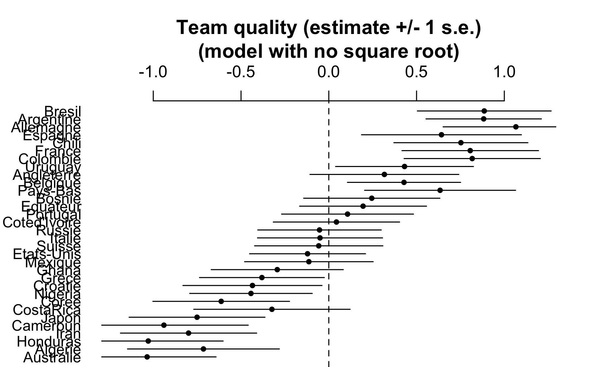
The parameter estimates are similar to before, but on a different scale, which makes sense given that we’re no longer working on the square root scale.
Next we make the graph comparing game outcomes to 95% posterior predictive intervals:
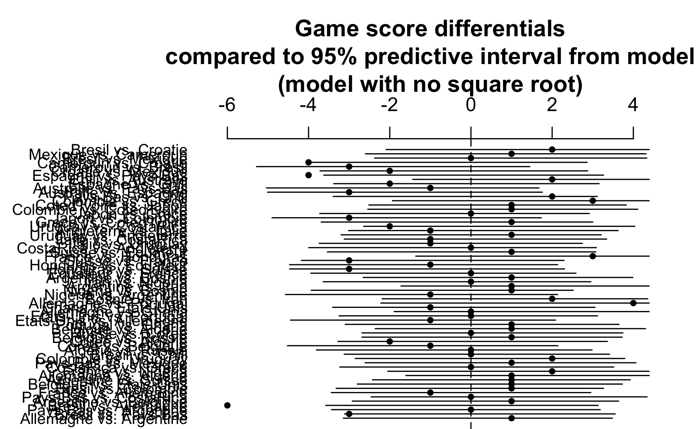
This looks fine: approximately 95% of the game outcomes fall within the 95% predictive intervals.
At this point we could declare stop and declare victory, but first we would like to figure out what went wrong with that square root model. We look again at the code and find the error, which is inside the transformed data block of our original Stan program:
sqrt_dif[i] = (step(dif[i]) - 0.5)*sqrt(fabs(dif[i]));That last line is wrong—it’s missing a factor of 2. Stan doesn’t have a sign() function so I hacked something together using “step(dif[i]) - 0.5”. But this difference takes on the value \(+0.5\) if dif is positive or \(-0.5\) if dif is negative. Here is the correct code:
sqrt_dif[i] = 2*(step(dif[i]) - 0.5)*sqrt(fabs(dif[i]));We now put fix the Stan program, re-fit the model, and display the parameter estimates and the two graphs as before:
Inference for Stan model: worldcup_no_sqrt.
4 chains, each with iter=2000; warmup=1000; thin=1;
post-warmup draws per chain=1000, total post-warmup draws=4000.
mean se_mean sd 2.5% 25% 50% 75% 98% n_eff Rhat
b 1.21 0.01 0.29 0.65 1.0 1.21 1.40 1.79 3075 1
sigma_a 0.37 0.01 0.22 0.02 0.2 0.36 0.52 0.83 828 1
sigma_y 1.32 0.00 0.16 1.03 1.2 1.31 1.42 1.68 2740 1
lp__ -73.29 0.23 5.83 -84.89 -77.2 -73.30 -69.30 -62.41 660 1
Samples were drawn using NUTS(diag_e) at Sun Dec 16 23:00:06 2018.
For each parameter, n_eff is a crude measure of effective sample size,
and Rhat is the potential scale reduction factor on split chains (at
convergence, Rhat=1).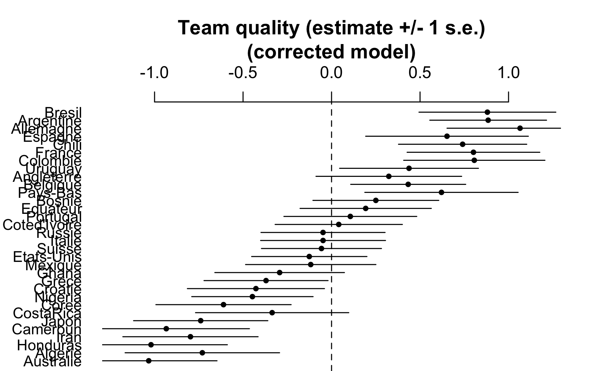

All is fine now. In retrospect we never needed that square root in the first place, but it’s good to have figured out our error, in case we need to fit such a model in the future. It was also instructive how we found that mistake through a routine plot comparing data to the posterior predictive distribution.
The final 95% predictive intervals are very wide, indicating that with the information used in this model, we can’t say much about any individual game. That’s fine; it is what it is.
4.5 Sex ratio
We can use prior information to refine estimates from noisy studies. For example, several years ago a researcher analyzed data from a survey of 3000 Americans and observed a correlation between attractiveness of parents and the sex of their children. In particular, the survey coded adults into five attractiveness categories, and it turned out that 56% of the children of parents in the highest attractiveness category were girls, compared to 48% of the children of parents in the other categories. The difference of 8% had a standard error (based on the usual formula for the difference in proportions) of 3%.
The observed difference is more than 2 standard errors from zero, meeting the usual standard of statistical significance, and indeed the claim that beautiful parents have more daughters was published in a scientific journal and received wide publicity.
This is, however, not the end of the story. It is well known that the variation in the human sex ratio occurs in a very narrow range. For example a recent count in the United States reported 48.7% girls among whites and 49.2% among blacks. Similar differences of half of a percentage point or less have been found when comparing based on factors such as birth order, maternal age, or season of birth. Thus we would find it hard to believe that any difference between more and less attractive parents could be as large as 0.5%.
We now perform Bayesian inference using the template above. The parameter of interest here, \(\theta\), is the probability of girl births among beautiful parents, minus the probability among other parents, all in the general population of Americans. As is often the case, we are interested in the comparison of \(\theta\) to zero: Is there strong evidence that \(\theta>0\), which would imply that more attractive parents are more likely to have girls?
We can express our scientific knowledge as a prior distribution on \(\theta\) with mean 0% and standard deviation 0.25%. The prior mean of zero says that, in advance of seeing the data we would have no reason to expect beautiful parents to have an elevated or depressed rate of girl births. The prior standard deviation of 0.25% says that we find it highly implausible that the true value of \(\theta\) is higher than 0.5% or lower than -0.5%.
For convenience we are expressing our estimates and uncertainties on a percentage scale, to avoid the awkwardness of working with expressions such as 0.0025 and possibly dropping a zero somewhere.
In this case, we could perform Bayesian inference analytically: with normally distributed data \(y\) with standard error \(\sigma_y\) and a normal\((\mu_0,\sigma_0)\) prior distribution, \(\theta\) is normally distributed in its posterior distribution, with \[\mbox{posterior mean: } \ \frac{\frac{1}{\sigma_0^2} \, \mu_0 + \frac{1}{\sigma_y^2}y} {\frac{1}{\sigma_0^2} + \frac{1}{\sigma_y^2}} \] and \[\mbox{posterior sd: } \ \sqrt{\frac{1}{\frac{1}{\sigma_0^2} + \frac{1}{\sigma_y^2}}} \]
But we are teaching Stan here, so we shall demonstrate the fit in Stan. Here is the Stan code:
data {
real y;
real<lower=0> sigma_y;
real mu_0;
real<lower=0> sigma_0;
}
parameters {
real theta;
}
model {
y ~ normal(theta, sigma_y);
theta ~ normal(mu_0, sigma_0);
}One advantage of using Stan here, rather than the formula, is that with Stan it is easy to alter the model, for example changing the prior distribution from normal to \(t\), or adding additional data in some way or another.
But for now we shall stick with the above normal model, feeding in the data \(y = 8, \sigma_y = 3, \mu_0 = 0, \sigma_0 = 0.25\), to obtain the following result:
Inference for Stan model: normal_normal.
4 chains, each with iter=2000; warmup=1000; thin=1;
post-warmup draws per chain=1000, total post-warmup draws=4000.
mean se_mean sd 2.5% 25% 50% 75% 98% n_eff Rhat
theta 0.05 0.01 0.24 -0.43 -0.12 0.04 0.21 0.52 1479 1
lp__ -4.01 0.02 0.68 -5.86 -4.19 -3.75 -3.58 -3.53 1997 1
Samples were drawn using NUTS(diag_e) at Sun Dec 16 23:00:43 2018.
For each parameter, n_eff is a crude measure of effective sample size,
and Rhat is the potential scale reduction factor on split chains (at
convergence, Rhat=1).4.6 Time series competition
A few years ago someone sent me an email about a “Global Climate Challenge” that he had seen online, and which was introduced as follows:
It has often been claimed that alarm about global warming is supported by observational evidence. I have argued that there is no observational evidence for global-warming alarm: rather, all claims of such evidence rely on invalid statistical analyses.
Some people, though, have asserted that the statistical analyses are valid. Those people assert, in particular, that they can determine, via statistical analysis, whether global temperatures have been increasing more than would be reasonably expected by random natural variation. Those people do not present any counter to my argument, but they make their assertions anyway.
In response to that, I am sponsoring a contest: the prize is $100,000. In essence, the prize will be awarded to anyone who can demonstrate, via statistical analysis, that the increase in global temperatures is probably not due to random natural variation.
How to win the money?
The file
data/Series1000.txtcontains 1000 time series. Each series has length 135: the same as that of the most commonly studied series of global temperatures (which span 1880–2014). The 1000 series were generated as follows. First, 1000 random series were obtained (via a trendless statistical model fit for global temperatures). Then, some randomly-selected series had a trend added to them. Some trends were positive; the others were negative. Each individual trend was 1°C/century (in magnitude)—which is greater than the trend claimed for global temperatures.
A prize of $100,000 (one hundred thousand U.S. dollars) will be awarded to the first person who submits an entry that correctly identifies at least 900 series: which series were generated by a trendless process and which were generated by a trending process.
But also this:
Each entry must be accompanied by a payment of $10.
OK, now it’s time to get to work. We start by downloading and
graphing the data.

Aha! The lines are fanning out from a common starting point. We’ll fit a regression to each line and then summarize each line by its average slope.
We multiplied the slopes (and standard errors) by 100 to put them on a per-century scale to match the above instructions.
Next we plot the estimated slopes and their standard errors:
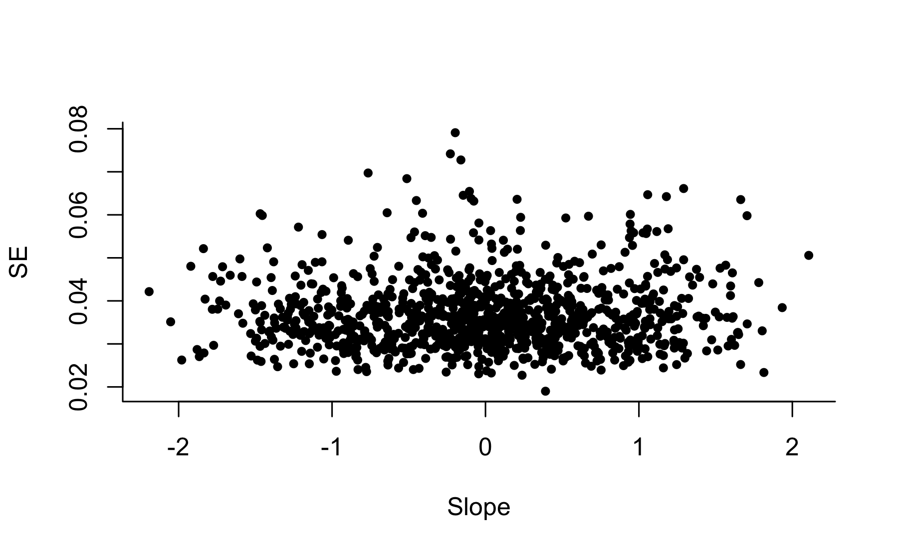
OK, not much information in the se’s. How about a histogram of the estimated slopes?
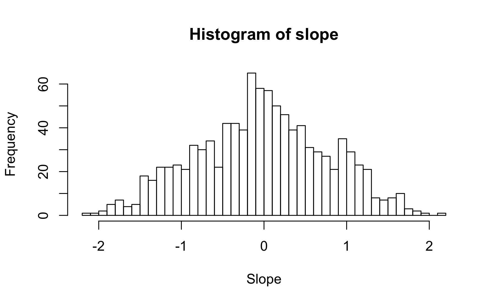
Based on the problem description, I’d expect to see distributions centered at 0, -1, and 1. It looks like this might be the case.
So let’s fit a mixture model. That’s easy. Here’s the Stan program:
data {
int K;
int N;
real y[N];
real mu[K];
}
parameters {
simplex[K] theta;
real sigma;
}
model {
real ps[K];
sigma ~ cauchy(0,2.5);
mu ~ normal(0,10);
for (n in 1:N) {
for (k in 1:K) {
ps[k] = log(theta[k]) + normal_lpdf(y[n] | mu[k], sigma);
}
target += log_sum_exp(ps);
}
}We now run the program and display the results:
SAMPLING FOR MODEL 'mixture' NOW (CHAIN 1).
Chain 1: Gradient evaluation took 0.000276 seconds
Chain 1: 1000 transitions using 10 leapfrog steps per transition would take 2.76 seconds.
Chain 1: Iteration: 1 / 2000 [ 0%] (Warmup)
Chain 1: Iteration: 200 / 2000 [ 10%] (Warmup)
Chain 1: Iteration: 400 / 2000 [ 20%] (Warmup)
Chain 1: Iteration: 600 / 2000 [ 30%] (Warmup)
Chain 1: Iteration: 800 / 2000 [ 40%] (Warmup)
Chain 1: Iteration: 1000 / 2000 [ 50%] (Warmup)
Chain 1: Iteration: 1001 / 2000 [ 50%] (Sampling)
Chain 1: Iteration: 1200 / 2000 [ 60%] (Sampling)
Chain 1: Iteration: 1400 / 2000 [ 70%] (Sampling)
Chain 1: Iteration: 1600 / 2000 [ 80%] (Sampling)
Chain 1: Iteration: 1800 / 2000 [ 90%] (Sampling)
Chain 1: Iteration: 2000 / 2000 [100%] (Sampling)
Chain 1: Elapsed Time: 1.71105 seconds (Warm-up)
Chain 1: 1.529 seconds (Sampling)
Chain 1: 3.24005 seconds (Total)
SAMPLING FOR MODEL 'mixture' NOW (CHAIN 2).
Chain 2: Gradient evaluation took 0.00024 seconds
Chain 2: 1000 transitions using 10 leapfrog steps per transition would take 2.4 seconds.
Chain 2: Iteration: 1 / 2000 [ 0%] (Warmup)
Chain 2: Iteration: 200 / 2000 [ 10%] (Warmup)
Chain 2: Iteration: 400 / 2000 [ 20%] (Warmup)
Chain 2: Iteration: 600 / 2000 [ 30%] (Warmup)
Chain 2: Iteration: 800 / 2000 [ 40%] (Warmup)
Chain 2: Iteration: 1000 / 2000 [ 50%] (Warmup)
Chain 2: Iteration: 1001 / 2000 [ 50%] (Sampling)
Chain 2: Iteration: 1200 / 2000 [ 60%] (Sampling)
Chain 2: Iteration: 1400 / 2000 [ 70%] (Sampling)
Chain 2: Iteration: 1600 / 2000 [ 80%] (Sampling)
Chain 2: Iteration: 1800 / 2000 [ 90%] (Sampling)
Chain 2: Iteration: 2000 / 2000 [100%] (Sampling)
Chain 2: Elapsed Time: 1.76644 seconds (Warm-up)
Chain 2: 1.61146 seconds (Sampling)
Chain 2: 3.3779 seconds (Total)
SAMPLING FOR MODEL 'mixture' NOW (CHAIN 3).
Chain 3: Gradient evaluation took 0.000278 seconds
Chain 3: 1000 transitions using 10 leapfrog steps per transition would take 2.78 seconds.
Chain 3: Iteration: 1 / 2000 [ 0%] (Warmup)
Chain 3: Iteration: 200 / 2000 [ 10%] (Warmup)
Chain 3: Iteration: 400 / 2000 [ 20%] (Warmup)
Chain 3: Iteration: 600 / 2000 [ 30%] (Warmup)
Chain 3: Iteration: 800 / 2000 [ 40%] (Warmup)
Chain 3: Iteration: 1000 / 2000 [ 50%] (Warmup)
Chain 3: Iteration: 1001 / 2000 [ 50%] (Sampling)
Chain 3: Iteration: 1200 / 2000 [ 60%] (Sampling)
Chain 3: Iteration: 1400 / 2000 [ 70%] (Sampling)
Chain 3: Iteration: 1600 / 2000 [ 80%] (Sampling)
Chain 3: Iteration: 1800 / 2000 [ 90%] (Sampling)
Chain 3: Iteration: 2000 / 2000 [100%] (Sampling)
Chain 3: Elapsed Time: 3.05249 seconds (Warm-up)
Chain 3: 1.4907 seconds (Sampling)
Chain 3: 4.54318 seconds (Total)
SAMPLING FOR MODEL 'mixture' NOW (CHAIN 4).
Chain 4: Gradient evaluation took 0.000252 seconds
Chain 4: 1000 transitions using 10 leapfrog steps per transition would take 2.52 seconds.
Chain 4: Iteration: 1 / 2000 [ 0%] (Warmup)
Chain 4: Iteration: 200 / 2000 [ 10%] (Warmup)
Chain 4: Iteration: 400 / 2000 [ 20%] (Warmup)
Chain 4: Iteration: 600 / 2000 [ 30%] (Warmup)
Chain 4: Iteration: 800 / 2000 [ 40%] (Warmup)
Chain 4: Iteration: 1000 / 2000 [ 50%] (Warmup)
Chain 4: Iteration: 1001 / 2000 [ 50%] (Sampling)
Chain 4: Iteration: 1200 / 2000 [ 60%] (Sampling)
Chain 4: Iteration: 1400 / 2000 [ 70%] (Sampling)
Chain 4: Iteration: 1600 / 2000 [ 80%] (Sampling)
Chain 4: Iteration: 1800 / 2000 [ 90%] (Sampling)
Chain 4: Iteration: 2000 / 2000 [100%] (Sampling)
Chain 4: Elapsed Time: 1.6733 seconds (Warm-up)
Chain 4: 1.5434 seconds (Sampling)
Chain 4: 3.21671 seconds (Total)
Inference for Stan model: mixture.
4 chains, each with iter=2000; warmup=1000; thin=1;
post-warmup draws per chain=1000, total post-warmup draws=4000.
mean se_mean sd 2.5% 25% 50% 75%
theta[1] 0.54 0.00 0.02 0.50 0.52 0.54 0.55
theta[2] 0.24 0.00 0.02 0.21 0.23 0.24 0.25
theta[3] 0.22 0.00 0.02 0.19 0.21 0.22 0.23
sigma 0.40 0.00 0.02 0.37 0.39 0.40 0.42
lp__ -1174.72 0.03 1.19 -1177.79 -1175.27 -1174.42 -1173.85
98% n_eff Rhat
theta[1] 0.58 3422 1
theta[2] 0.27 3612 1
theta[3] 0.26 3414 1
sigma 0.44 3016 1
lp__ -1173.38 1974 1
Samples were drawn using NUTS(diag_e) at Sun Dec 16 23:01:38 2018.
For each parameter, n_eff is a crude measure of effective sample size,
and Rhat is the potential scale reduction factor on split chains (at
convergence, Rhat=1).Convergence is fine: \(\widehat{R}\) is close to 1 for everything. The estimated weights of the three mixture components are approximately 0.5, 0.25, 0.25. Given that the problem was made up, I’m guessing the weights of the underlying data-generation process are exactly 1/2, 1/4, and 1/4. The standard deviation of the slopes within each component is 0.4, or close to it. We could also try fitting a model where the standard deviations of the three components differ, but we won’t, partly because the description given with the simulated data described the change as adding a trend, and partly because the above histogram doesn’t seem to show any varying of the widths of the mixture components.
OK, now we’re getting somewhere. To make predictions, we need to know, for each series, the probability of it being in each of the three components. We’ll compute these probabilities by adding a generated quantities block to the Stan program:
generated quantities {
matrix[N,K] p;
for (n in 1:N){
vector[K] p_raw;
for (k in 1:K){
p_raw[k] <- theta[k]*exp(normal_log(y[n], mu[k], sigma));
}
for (k in 1:K){
p[n,k] <- p_raw[k]/sum(p_raw);
}
}
}We then re-fit the model, extract the \(p\)’s, and average them over the posterior simulations.
We now have a \(1000\times 3\) matrix of probabilities. Let’s take a look at the first ten rows
[,1] [,2] [,3]
[1,] 0.08 0.00 0.92
[2,] 0.40 0.60 0.00
[3,] 0.93 0.01 0.06
[4,] 0.83 0.17 0.00
[5,] 0.82 0.18 0.00
[6,] 0.95 0.01 0.05
[7,] 0.74 0.00 0.26
[8,] 0.86 0.14 0.00
[9,] 0.11 0.00 0.89
[10,] 0.87 0.00 0.13So, the first series is probably drawn from the sloping-upward model; the second might be from the null model or it might be from the sloping-downward model; the third, fourth, fifth, sixth, seventh, and eighth are probably from the null model; the ninth is probably from the sloping-upward model; and so forth.
We’ll now program this: for each of the 1000 series in the dataset, we’ll pick which of the three mixture components has the highest probability. We’ll save the probability and also which component is being picked.
And now we can sum this over the 1000 series. We’ll compute the number of series assigned to each of the three choices:
choice
1 2 3
559 232 209 The guesses are not quite in proportion 500, 250, 250. There seem to be too many guesses of zero slope and not enough of positive and negative slopes. But that makes sense given the decision problem: we want to maximize the number of correct guesses so we end up disproportionately guessing the most common category. That’s fine; it’s how it will be.
And we can compute the expected number of correct guesses (based on the posterior distribution we have here), and the standard deviation of the number of correct guesses (based on the reasonable approximation of independence of the 1000 series conditional on the model). And then we’ll print all these numbers:
[1] 854.5 10.3Interesting. The expected number of correct guesses is 854.1. Not quite the 900 that’s needed to win! The standard error of the number of correct guesses is 10.3, so 900 is over 5 standard errors away from our expected number correct. That’s bad news!
How bad is it? We can compute the normal cumulative density fucntion to get the probability of at least 900 successes; that’s \(\mbox{pnorm}(854.1, 900, 10.3)\):
[1] 4.9e-06That’s a small number; here’s its reciprocal:
[1] 2e+05That’s a 1-in-230,000 chance of winning the big prize!
But we only have to get at least 900. So we can do the continuity correction and evaluate the probability of at least 899.5 successes, which, when inverted, yields:
[1] 161775Nope, still no good. For the bet to be worth it, even in the crudest sense of expected monetary value, the probability of winning would have to be at least 1 in 10,000. (Recall that the prize is $100,000 but the cost of entry is $10.) And that’s all conditional on the designer of the study doing everything exactly as he said, and not playing with multiple seeds for the random number generator, etc. After all, he could well have first chosen a seed and generated the series, then performed something like the above analysis and checked that the most natural estimate gave only 850 correct or so, and in the very unlikely event that the natural estimate gave 900 or close to it, just re-running with a new seed. I have no reason to think that the creator of this challenge did anything like that; my point here is only that, even if he did his simulation in a completely clean way, our odds of winning are about 1 in 200,000—about 1/20th what we’d need for this to be a fair game.
There is one more thing, though: the data are highly autocorrelated, so least-squares regression may not be the most efficient way to estimate these slopes. If we can estimate the slopes more precisely, we can get more discrimination in our predictions. Maybe there is a way to win the game by extracting more information from each series, but it won’t be easy.
You could say that the above all demonstrates the designer’s point, that you can’t identify a trend in a time series of this length. But I don’t think it would make sense to draw that conclusion from this exercise. After all, you can just tweak the parameters in the problem a bit—or simply set the goal to 800 correct instead of 900—and the game becomes easy to win. Or, had the game been winnable as initially set up, you could just up the threshold to 950, and again it would become essentially impossible to win. Conversely, if the designer of the challenge had messed up his calculations and set the threshold to 800, and someone had sent in a winning entry, it wouldn’t disprove his claims about climate science, it would just mean he hadn’t been careful enough in setting up his bet.
4.7 Declining exponential
Let’s fit the following simple model: \(y = ae^{-bx} + \mbox{error}\), given data \((x,y)_i\): \[ y_i = ae^{-bx_i} + \epsilon_i, \mbox{ for } i=1,\dots,N, \] We shall assume the errors are independent and normally distributed: \(\epsilon_i \sim \mbox{normal}(0,\sigma)\).
Here is the model in Stan:
data {
int N;
vector[N] x;
vector[N] y;
}
parameters {
real a;
real b;
real<lower=0> sigma;
}
model {
y ~ normal(a*exp(-b*x), sigma);
a ~ normal(0, 10);
b ~ normal(0, 10);
sigma ~ normal(0, 10);
}We have given the parameters \(a\), and \(b\), and \(\sigma\) normal prior distibutions centered at 0 with standard deviation 10. In addition, the parameter \(\sigma\) is constrained to be positive. The purpose of the prior distributions is to keep the computations at a reasonable value. If we were working on a problem in which we thought that \(a\), \(b\), or \(\sigma\) could be much greater than 10, we would want to use a weaker prior distribution.
Another point about the above Stan program: the model for \(y\) is vectorized and could instead have been written more explicitly as a loop:
for (i in 1:N){
y[i] ~ normal(a*exp(-b*x[i]), sigma);
}We prefer the vectorized version as it is more compact and it also runs faster in Stan, for reasons discussed elsewhere in this book.
To demonstrate our exponential model, we fit it to fake data. We’ll simulate \(N=100\) data points with predictors \(x\) uniformly distributed between 0 and 10, from the above model with \(a=0.2, b=0.3, \sigma=0.5\).
Here is a graph of the true curve and the simulated data:
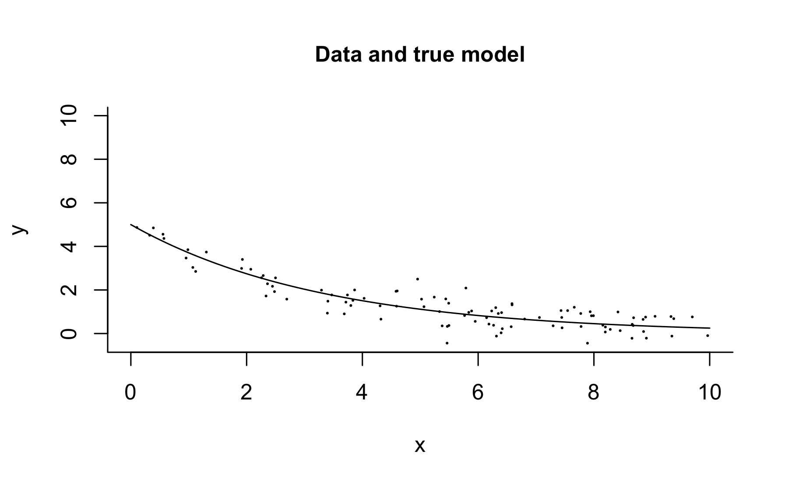
And then we fit the model:
Inference for Stan model: exponential.
4 chains, each with iter=2000; warmup=1000; thin=1;
post-warmup draws per chain=1000, total post-warmup draws=4000.
mean se_mean sd 2.5% 25% 50% 75% 98% n_eff Rhat
a 4.95 0.00 0.21 4.52 4.81 4.96 5.10 5.36 1814 1
b 0.30 0.00 0.02 0.27 0.29 0.30 0.31 0.33 2136 1
sigma 0.49 0.00 0.04 0.43 0.47 0.49 0.51 0.57 2306 1
lp__ 21.05 0.03 1.19 18.00 20.50 21.35 21.94 22.44 1908 1
Samples were drawn using NUTS(diag_e) at Sun Dec 16 23:03:38 2018.
For each parameter, n_eff is a crude measure of effective sample size,
and Rhat is the potential scale reduction factor on split chains (at
convergence, Rhat=1).Recall that the true parameter values were \(a=5.0, b=0.3, \sigma=0.5\). Here the model is simple enough and the data are clean enough that we can estimate all three of these parameters with reasonable precision from the data, as can be seen from the 95% intervals above.
Alternatively, we might want to say ahead of time that we are fitting a declining exponential curve that starts positive and descends to zero. We would thus want to constrain the parameters \(a\) and \(b\) to be positive, which we can do in the parameters block:
real<lower=0> a;
real<lower=0> b;Otherwise we leave the model unchanged. In this case the results turn out to be very similar:
Inference for Stan model: exponential_positive.
4 chains, each with iter=2000; warmup=1000; thin=1;
post-warmup draws per chain=1000, total post-warmup draws=4000.
mean se_mean sd 2.5% 25% 50% 75% 98% n_eff Rhat
a 4.95 0.01 0.21 4.54 4.81 4.95 5.08 5.37 1627 1
b 0.30 0.00 0.02 0.27 0.29 0.30 0.31 0.33 1962 1
sigma 0.49 0.00 0.04 0.42 0.47 0.49 0.51 0.57 2350 1
lp__ 21.41 0.03 1.25 18.06 20.84 21.72 22.32 22.84 1507 1
Samples were drawn using NUTS(diag_e) at Sun Dec 16 23:04:19 2018.
For each parameter, n_eff is a crude measure of effective sample size,
and Rhat is the potential scale reduction factor on split chains (at
convergence, Rhat=1).With weaker data, though, the constraints could make a difference. We could experiment on this by doing the same simulation but with just \(N=10\) data points:
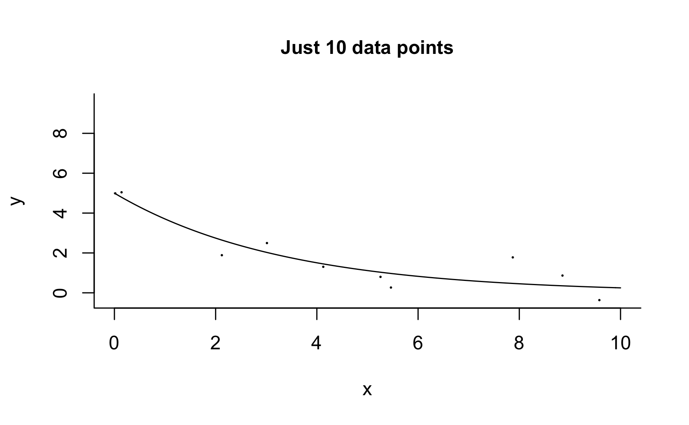
First we fit the unconstrained model:
Inference for Stan model: exponential.
4 chains, each with iter=2000; warmup=1000; thin=1;
post-warmup draws per chain=1000, total post-warmup draws=4000.
mean se_mean sd 2.5% 25% 50% 75% 98% n_eff Rhat
a 5.27 0.05 0.97 3.70 4.8 5.18 5.61 7.8 317 1.0
b 0.92 0.28 1.79 0.22 0.3 0.36 0.48 7.7 41 1.1
sigma 0.98 0.06 0.46 0.51 0.7 0.85 1.11 2.2 59 1.1
lp__ -3.63 0.42 2.85 -11.13 -4.5 -2.56 -1.63 -0.9 47 1.1
Samples were drawn using NUTS(diag_e) at Sun Dec 16 23:04:21 2018.
For each parameter, n_eff is a crude measure of effective sample size,
and Rhat is the potential scale reduction factor on split chains (at
convergence, Rhat=1).Then we fit the constrained model:
Inference for Stan model: exponential_positive.
4 chains, each with iter=2000; warmup=1000; thin=1;
post-warmup draws per chain=1000, total post-warmup draws=4000.
mean se_mean sd 2.5% 25% 50% 75% 98% n_eff Rhat
a 5.14 0.02 0.75 3.83 4.71 5.10 5.51 6.69 1312 1
b 0.58 0.05 1.18 0.21 0.30 0.35 0.43 3.52 620 1
sigma 0.89 0.01 0.35 0.51 0.66 0.81 1.01 1.78 668 1
lp__ -2.32 0.07 1.72 -6.56 -3.11 -1.83 -1.04 -0.38 563 1
Samples were drawn using NUTS(diag_e) at Sun Dec 16 23:04:22 2018.
For each parameter, n_eff is a crude measure of effective sample size,
and Rhat is the potential scale reduction factor on split chains (at
convergence, Rhat=1).Different things can happen with different sets of simulated data, but the inference with the positivity constraints will typically be much more stable. Of course, we would only want to constrain the model in this way if we knew that the positivity restriction is appropriate.
Now suppose that the data are also restricted to be positive. Then we need a different error distribution, as the above model with additive normal errors can yield negative data.
Let’s try a multiplicative error, with a lognormal distribution:
\[ y_i = ae^{-bx_i} * \epsilon_i, \mbox{ for } i=1,\dots,N\\ \log\epsilon_i \sim \mbox{normal}(0,\log\sigma), \mbox{ for } i=1,\dots,N \]
Here is the model in Stan:
data {
int N;
vector[N] x;
vector[N] y;
}
parameters {
real<lower=0> a;
real<lower=0> b;
real<lower=0> sigma;
}
model {
vector[N] y_pred;
y_pred = a*exp(-b*x);
y ~ lognormal(log(y_pred), sigma);
a ~ normal(0, 10);
b ~ normal(0, 10);
sigma ~ normal(0, 10);
}As before, we can simulate fake data from this model: 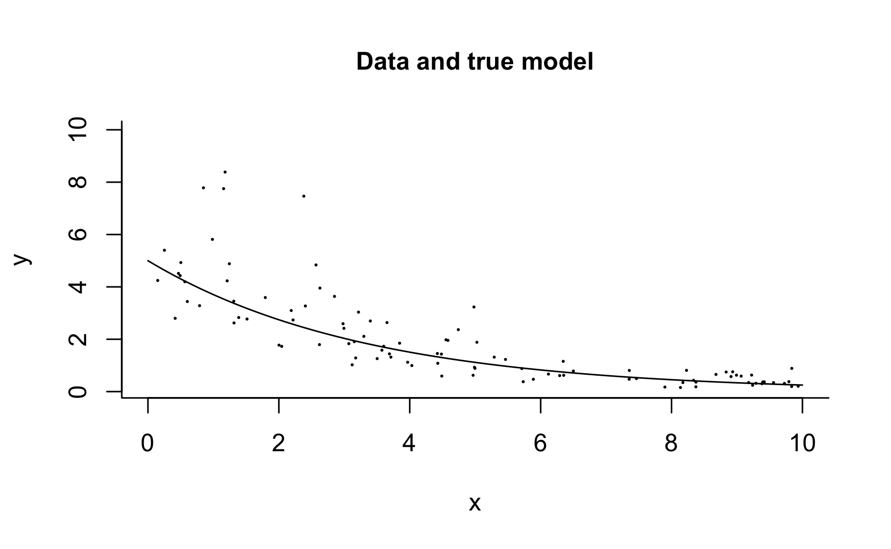
We can then fit the model to the simulated data and check that the parameters are approximately recovered:
Inference for Stan model: exponential_positive_lognormal.
4 chains, each with iter=2000; warmup=1000; thin=1;
post-warmup draws per chain=1000, total post-warmup draws=4000.
mean se_mean sd 2.5% 25% 50% 75% 98% n_eff Rhat
a 5.36 0.01 0.46 4.51 5.03 5.34 5.68 6.28 1725 1
b 0.30 0.00 0.01 0.27 0.29 0.30 0.31 0.32 1809 1
sigma 0.46 0.00 0.03 0.40 0.43 0.45 0.48 0.53 2272 1
lp__ 28.66 0.03 1.24 25.43 28.11 28.97 29.57 30.09 1384 1
Samples were drawn using NUTS(diag_e) at Sun Dec 16 23:05:01 2018.
For each parameter, n_eff is a crude measure of effective sample size,
and Rhat is the potential scale reduction factor on split chains (at
convergence, Rhat=1).4.8 Sum of declining exponentials
From the numerical analysis literature, here is an example of an inference problem that appears simple but can be suprisingly difficult. The challenge is to esitmate the parameters of a sum of declining exponentials: \(y = a_1e^{-b_1x} + a_2e^{-b_2x}\). This is also called an inverse problem, and it can be challenging to decompose these two declining functions.
This expression, and others like it, arise in many examples, including in pharmacology, where \(x\) represents time and \(y\) could be the concentration of a drug in the blood of someoone who was given a specfied dose at time 0. In a simple two-compartment model, the total concentration will look like a sum of declining exponentials.
To set this up as a statistics problem, we add some noise to the system. We want the data to always be positive so our noise will be multiplicative: \[ y_i = (a_1e^{-b_1x_i} + a_2e^{-b_2x_i}) * \epsilon_i, \mbox{ for } i=1,\dots,N, \] with lognormally-distributed errors \(\epsilon\).
Here is the model in Stan:
data {
int N;
vector[N] x;
vector[N] y;
}
parameters {
vector<lower=0>[2] a;
positive_ordered[2] b;
real<lower=0> sigma;
}
model {
vector[N] y_pred;
y_pred = a[1]*exp(-b[1]*x) + a[2]*exp(-b[2]*x);
y ~ lognormal(log(y_pred), sigma);
}The coefficients \(a\) and the residual standard deviation \(\sigma\) are constrained to be positive. The parameters \(b\) are also positive—these are supposed to be declining, not increasing, exponentials—and are also constrained to be ordered, so that \(b_1<b_2\). We need this to keep the model identified: Without some sort of restriction, there would be no way from the data to tell which component is labeled 1 and which is 2. So we arbitrarily label the component with lower value of \(b\)—that is, the one that declines more slowly—as the first one, and the component with higher value of \(b\) to be the second. We programmed the positive_ordered type into Stan because this sort of identification problem comes up fairly often in applications.
We’ll try out our Stan model by simulating fake data from a model where the two curves should be cleanly distinguished, setting \(b_1=0.1\) and \(b_2=2.0\), a factor of 20 apart in scale. We’ll simulate 1000 data points where the predictors \(x\) are uniformlly spaced from 0 to 10, and, somewhat arbitrarily, set \(a_1=1.0\), \(a_2=0.8\), and \(\sigma=0.2\). We can then simulate from the lognormal distribution to generate the data \(y\).
Here is a graph of the true curve and the simulated data:
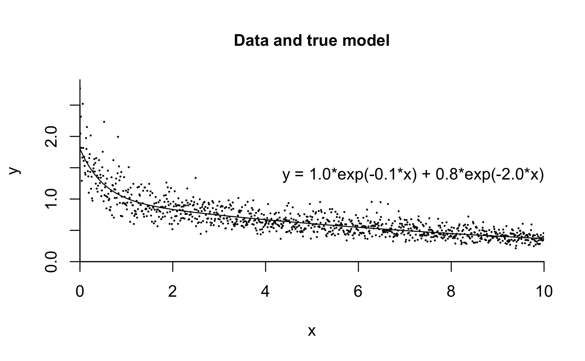
And then we fit the model:
Inference for Stan model: sum_of_exponentials.
4 chains, each with iter=2000; warmup=1000; thin=1;
post-warmup draws per chain=1000, total post-warmup draws=4000.
mean se_mean sd 2.5% 25% 50% 75% 98% n_eff
a[1] 0.99 0.00 0.02 0.94 0.97 0.99 1.00 1.03 1522
a[2] 0.92 0.00 0.10 0.74 0.85 0.92 0.98 1.13 2821
b[1] 0.10 0.00 0.00 0.09 0.10 0.10 0.10 0.11 1629
b[2] 2.28 0.01 0.34 1.68 2.04 2.25 2.48 3.03 1986
sigma 0.20 0.00 0.00 0.19 0.20 0.20 0.20 0.21 2924
lp__ 1113.05 0.04 1.64 1109.16 1112.23 1113.40 1114.22 1115.23 1324
Rhat
a[1] 1
a[2] 1
b[1] 1
b[2] 1
sigma 1
lp__ 1
Samples were drawn using NUTS(diag_e) at Sun Dec 16 23:05:57 2018.
For each parameter, n_eff is a crude measure of effective sample size,
and Rhat is the potential scale reduction factor on split chains (at
convergence, Rhat=1).The parameters are recovered well, with the only difficulty being \(b_2\), where the estimate is 1.89 but the true value is 2.0—but that is well within the posterior uncertainty. Stan worked just fine on this nonlinear model.
But now let’s make the problem just slightly more difficult. Instead of setting the two parameters \(b\) to 0.1 and 2.0, we’ll make them 0.1 and 0.2, so now only a factor of 2 separates the scales of the two declining exponentials.
This should still be easy to fit in Stan, right? Wrong:
Inference for Stan model: sum_of_exponentials.
4 chains, each with iter=2000; warmup=1000; thin=1;
post-warmup draws per chain=1000, total post-warmup draws=4000.
mean se_mean sd 2.5% 25% 50% 75% 98%
a[1] 1.8e+00 0.00 0.02 1.7e+00 1.7e+00 1.7e+00 1.8e+00 1.8e+00
a[2] 1.3e+00 0.20 0.64 1.5e-01 8.8e-01 1.3e+00 1.7e+00 2.7e+00
b[1] 1.3e-01 0.00 0.00 1.3e-01 1.3e-01 1.3e-01 1.3e-01 1.4e-01
b[2] 8.9e+307 NaN Inf 5.1e+306 4.5e+307 9.0e+307 1.3e+308 1.7e+308
sigma 2.0e-01 0.00 0.00 1.9e-01 2.0e-01 2.0e-01 2.0e-01 2.1e-01
lp__ 1.8e+03 0.19 1.80 1.8e+03 1.8e+03 1.8e+03 1.8e+03 1.8e+03
n_eff Rhat
a[1] 261 1.0
a[2] 10 1.3
b[1] 287 1.0
b[2] NaN NaN
sigma 452 1.0
lp__ 86 1.1
Samples were drawn using NUTS(diag_e) at Sun Dec 16 23:06:21 2018.
For each parameter, n_eff is a crude measure of effective sample size,
and Rhat is the potential scale reduction factor on split chains (at
convergence, Rhat=1).What happened?? It turns out that these two declining exponentials are very hard to detect. Look: here’s a graph of the two-component model for the expected data, \(y=1.0e^{-0.1x}+0.8e^{-0.2x}\):

And now we’ll overlay a graph of a particular one-component model, \(y=1.8e^{-0.135x}\):

The two lines are strikingly close, and it would be essentially impossible to tell them apart based on noisy data, even 1000 measurements. So Stan had trouble recovering the true parameters from the data.
Still, if the parameters are difficult to fit, this should just result in a high posterior uncertainty. Why did the Stan fit explode? The problme in this case is that, since only one term in the model was required to fit these data, the second term was completely free—and the parameter \(\beta_2\) was unbounded: there was nothing stopping it from being estimated as arbitrarily large. This sort of unbounded posterior distribution is called improper (see Bayesian Data Analysis for a more formal definition), and there is no way of drawing simulations from such a distribution, hence Stan does not converge. The simulations drift off to infinity, as there is nothing in the prior or likeliood that is keeping them from doing so.
To fix the problem, we can add some prior information. Here we shall use our default, which is independent \(\mbox{norma}(0,1)\) prior densities on all the parameters; thus, we add these lines to the model block in the Stan program:
a ~ normal(0, 1);
b ~ normal(0, 1);
sigma ~ normal(0, 1);For this particular example, all we really need is a prior on \(b\) (really, just \(b_2\) because of the ordering), but to demonstrate the point we shall assign default priors to everyhing. The priors are in addition to the rest of the model; that is, they go on top of the positivity and ordering constraints. So, for example, the prior for \(\sigma\) is the positive half of a normal, which is sometimes written as \(\mbox{normal}^+(0,1)\).
We now can fit this new model to our data, and the results are much more stable:
Inference for Stan model: sum_of_exponentials_with_priors.
4 chains, each with iter=2000; warmup=1000; thin=1;
post-warmup draws per chain=1000, total post-warmup draws=4000.
mean se_mean sd 2.5% 25% 50% 75% 98% n_eff
a[1] 1.47 0.02 0.29 0.66 1.33 1.59 1.68 1.74 136
a[2] 0.36 0.02 0.27 0.05 0.17 0.26 0.49 1.13 138
b[1] 0.12 0.00 0.01 0.08 0.11 0.12 0.13 0.13 157
b[2] 0.66 0.02 0.53 0.16 0.27 0.48 0.89 2.04 651
sigma 0.20 0.00 0.00 0.19 0.20 0.20 0.20 0.21 1217
lp__ 1109.32 0.06 1.73 1104.97 1108.45 1109.72 1110.57 1111.47 719
Rhat
a[1] 1.1
a[2] 1.1
b[1] 1.0
b[2] 1.0
sigma 1.0
lp__ 1.0
Samples were drawn using NUTS(diag_e) at Sun Dec 16 23:08:33 2018.
For each parameter, n_eff is a crude measure of effective sample size,
and Rhat is the potential scale reduction factor on split chains (at
convergence, Rhat=1).The fit is far from perfect—compare to the true parameter values, $a_1=1.0, a_2=0.8, b_1=0.1, b_2=0.2—but we have to expect that. As explained above, the data at hand do not identify the parameters, so all we can hope for in a posterior distribution is some summary of uncertainty.
The question then arises, what about those prior distributions? We can think about them in a couple different ways.
From one direction, we can think of scaling. We are using priors centered at 0 with a scale of 1; this can be reasonable if the parameters are on “unit scale,” meaning that we expect them to be of order of magnitude around 1. Not all statistical models are on unit scale. For example, in the above model, if the data \(y_i\) are on unit scale, but the data values \(x_i\) take on values in the millions, then we’d probably expect the parameters \(b_1\) and \(b_2\) to be roungly on the scale of \(10^{-6}\). In such a case, we’d want to rescale \(x\) so that the coefficients \(b\) are more interpretable. Similarly, if the values of \(y\) ranged in the millions, then the coefficents \(a\) would have to be of order \(10^6\), and, again, we would want ot reascale the data or the model so that \(a\) would be on unit scale. By using unit scale priors, we are implicitly assuming the model has been scaled.
From the other direction, instead of adapting the model to the prior distribution, we could adapt the prior to the model. That would imply an understanding of a reasonable range of values for the parameters, based on the context of the problem. In any particular example this could be done by simulating parameter vectors from the prior distribution and graphing the corresponding curves of expected data, and seeing if these could plausibly cover the possible cases that might arise in the particular problem being studied.
No matter how it’s done, infernece has to come from somewhere, and if the data are weak, you need to put in prior information if your goal is to make some statement about possible parameter values, and from there to make probabilistic predictions and decisions.